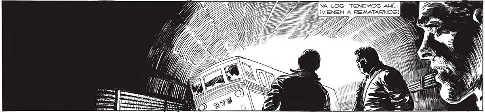

A ÁS ===— TÁ AA 0) poso Ñ Ntra a Es Ml TENEMOS QUE ENCONTRAR UNA VÍA DE ESCA- ASÍ ; HUM... TÚ PODRAS PE..¡DE ALGUNA MANERA TENEMOS QUE PA- a CI E AN ; PASAR, FRANCO... GAR POR ENTRE TODOS ESOS FIERROS! q | NA N Ñ N Ñ A ARAS = cl a A A NN ANN Y QUIZA TAMBIÉN ¡NO SE AFLIJA, PROFESOR! ¡PUEDO MEJUAN... PERO YO| | |TERME DENTRO DEL COCHE POR UNA VENNO CREO QUE TANA! ¡ABRIRÉ LAS PUERTAS CON EL DISPUEDA HACERLO! POSITIVO DE EMERGENCIA! 13 SOY MUY GORDO! SIS A NI A 9) ” Un momenTO DESPUÉS, CON UN BUFIDO, LAS PUERTAS GE ABRÍAN... 227
